Comparative US AQI
Time Series Forecasting in California
with Extreme-Event and Climate-Context Evaluation
FPT University Ho Chi Minh City
Group 7: Ta Nguyen Anh Minh (SE200416) • Trinh Quoc Sang (SE194517)
Supervisor: Le Vo Minh Thu
Outline (10 Data Science Steps)
Steps 1–3
Steps 3–4
Steps 5–9
Step 10 + Q&A
Problem Understanding
- Business Context: California wildfires pose severe health risks. Early warning is critical.
- Task Type: Regression (Predicting continuous AQI).
- Target: Hourly PM2.5-derived AQI (Highly right-skewed with extreme upper-tail spikes).
- Features: Time-series (Lags), Meteorological (Temp, Humidity), and Engineered (VPD).
- Success Metrics: $R^2$ (Explained Variance), MAE, and RMSE.
- RBL Justification: Grounded in baseline paper (Vu et al., 2022). Supported by AI Audit Log.
Research Questions (RQs)
- RQ1: How accurately can common tabular machine-learning models forecast hourly US AQI in California under a leakage-safe temporal evaluation protocol?
- RQ2: How does the availability of recent local AQI history affect forecasting performance between short-term autoregressive nowcasting and strict 24-hour-ahead forecasting?
- RQ3: How stable are the forecasting models under climate-context and extreme-AQI evaluation, and what do VPD and spatial lag features contribute?
Data Understanding & Preprocessing
- Dataset Profile & AI Audit: 181,122 rows $\times$ 21 base columns. Sources: EPA AQS & Open-Meteo.
- Missing Values: Conservative Linear Interpolation (6h limit) to fix short dropouts;
dropnafor long gaps. - Outliers: Extreme upper-tail AQI spikes detected. Decision: RETAINED, as predicting wildfire events is the primary goal.
- Inconsistent: Handled UTC-to-Local timezone misalignment and removed duplicated timestamps.
- Skewness & Imbalance: Target is heavily right-skewed. Decision: No log-transform, because tree-based models handle skewness natively and we predict raw AQI directly.
Data Alignment & Preprocessing
- Merged EPA AQS observations with Open-Meteo weather parameters.
- Built a 181,122-record hourly panel (2018–2025) for Fresno, LA, and San Jose.
- Handled missing data via Conservative Linear Interpolation (6-hour limit).
- Dropped long missing gaps to prevent "hallucinating" data during critical wildfire spikes.
EDA — Geospatial Analysis
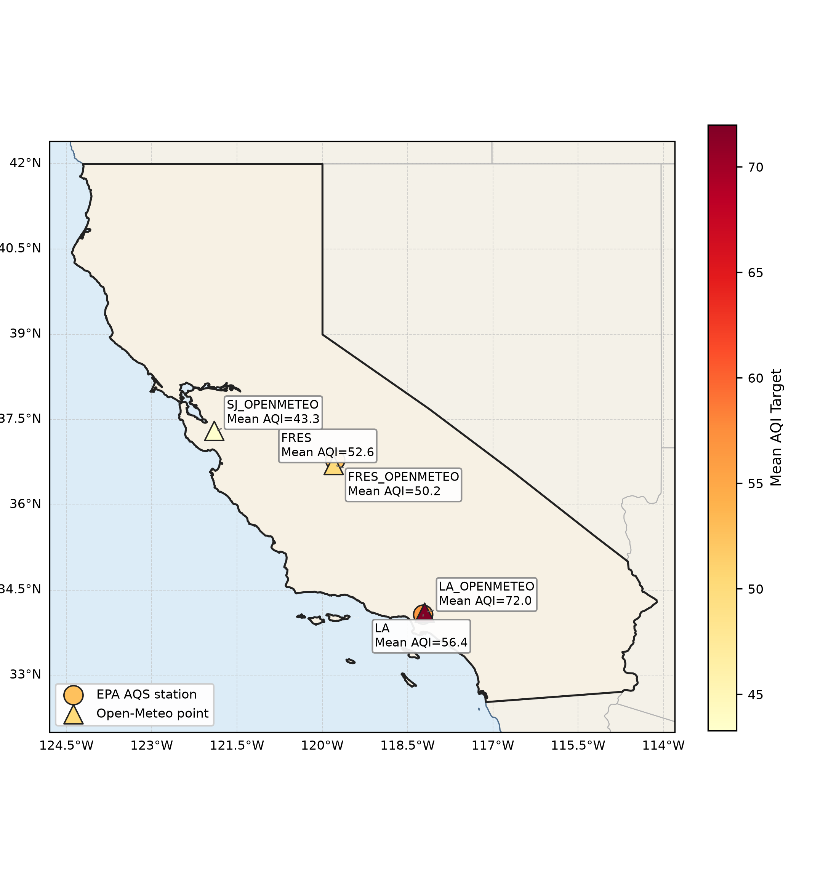
Mapped AQS stations using Latitude/Longitude. Ensures spatial coverage across Fresno, Los Angeles, and San Jose. Charts generated via AI prompts — code & evidence logged in AI Audit Log.
EDA — Multivariate Analysis
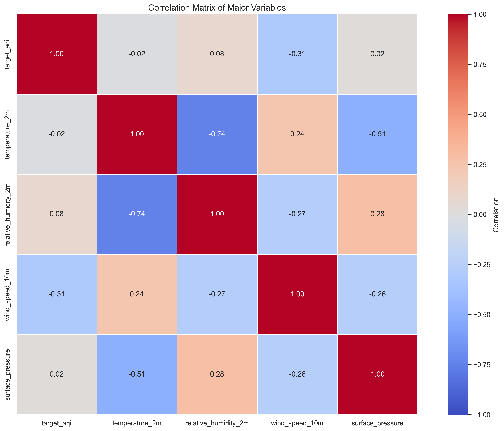
Correlation matrix across multiple features. Insight: Weak linear correlations justify the RBL decision to use non-linear (Tree-based) models to answer RQ1.
EDA — Univariate & Bivariate Timeline
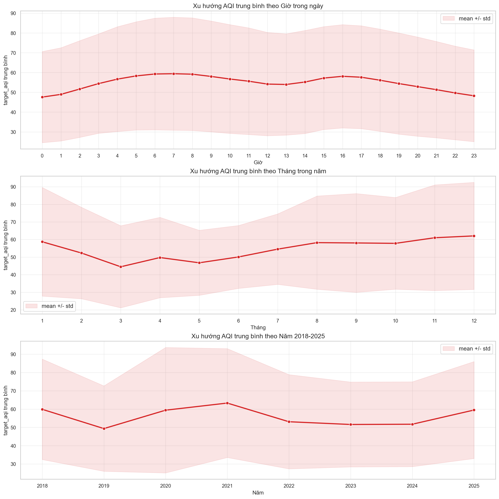
Analyzed AQI distribution and temporal patterns. Insight: Severe upper-tail spikes cluster in late summer — especially the 2020 Historic Wildfires. This directly sets context for RQ3 stability evaluation.
EDA — Distribution & Outliers
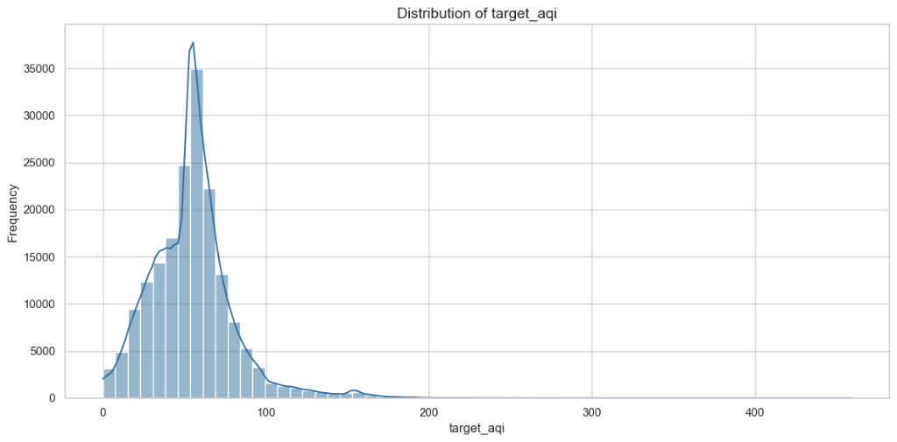
Distribution shows a heavy right tail.
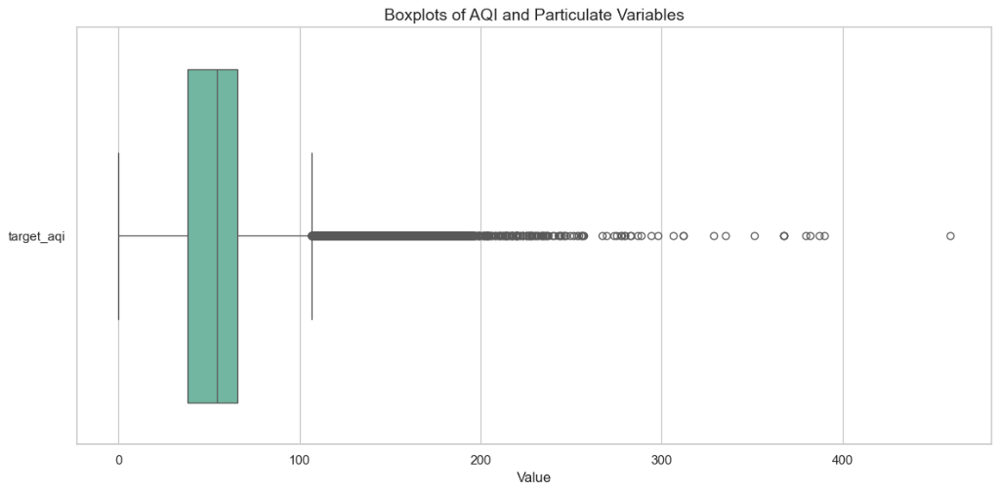
Extreme upper-tail spikes (wildfires).
EDA — Seasonality Analysis
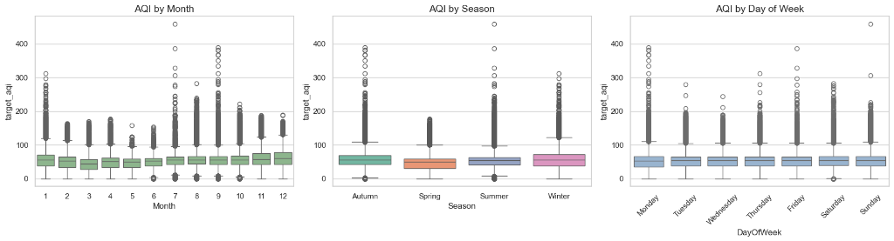
Breakdown by Month, Season, and Day.
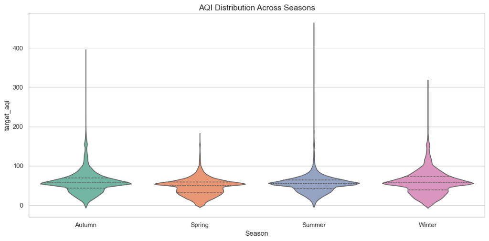
Violin plots revealing volatile summer/autumn.
EDA — AQI & Vapor Pressure Deficit (VPD)
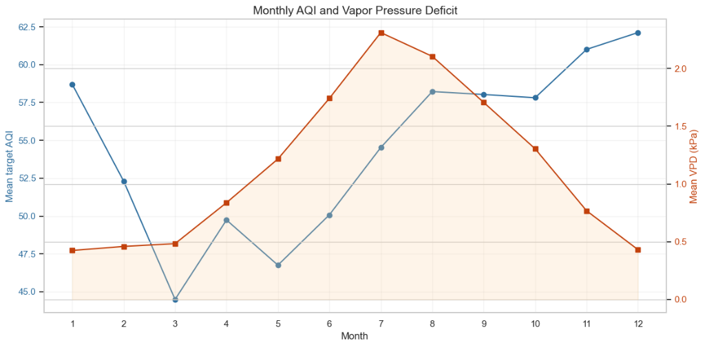
Monthly trend comparing AQI and VPD. Insight: Strong physical correlation during dry wildfire months.
EDA — Extreme Events Profiling
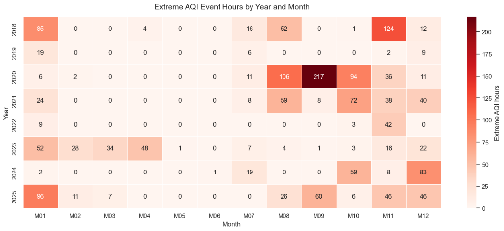
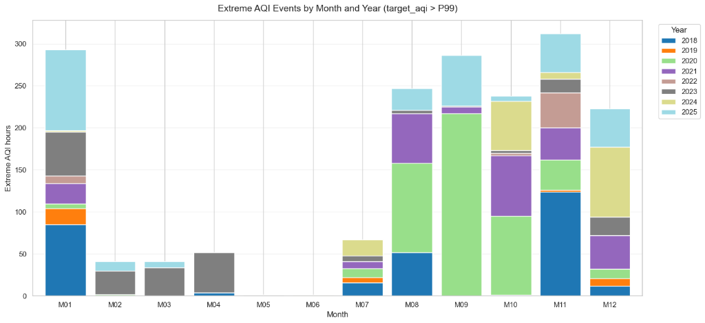
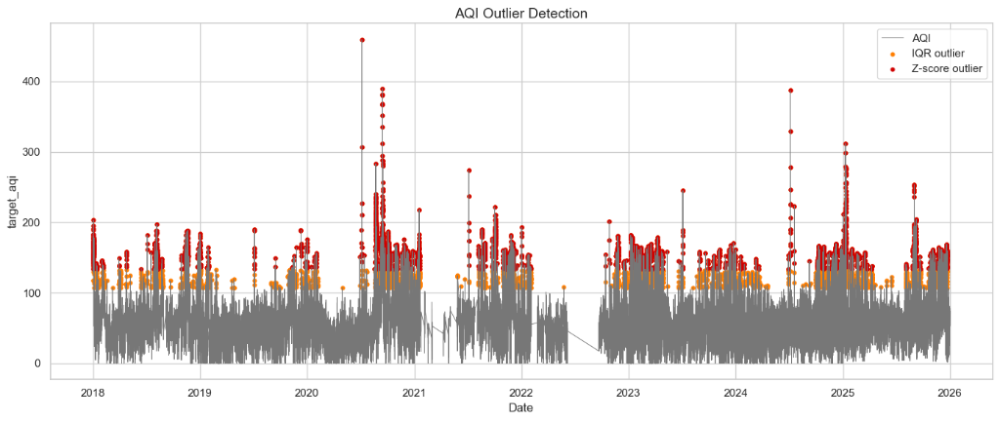
Insight: 2020 (August Complex) and 2025 (Palisades) dominate the extreme upper-tail events (Top 1%), perfectly justifying our manual Holdout/Test year selection.
Feature Engineering
- Handling Review: Outliers retained, Missing filled via 6h-interpolation, Target not log-transformed (as justified in Step 2).
- Feature Enrichment: Created Temporal Lags (1-3h) and Spatial Lags (cross-station averages).
- Feature Transformation: Derived non-linear physical feature VPD (Vapor Pressure Deficit) from Temp & Humidity.
- Feature Selection: Dropped near-zero variance features; monitored Multicollinearity.
- Feature Encoding: Extracted cyclic temporal features (Month, Hour) and applied OneHotEncoder for categorical
city. - Feature Scaling: None applied. Tree-based models (XGBoost) split on thresholds and are scale-invariant.
Interactive AI Dashboard
- Interactive Charts: 3+ Plotly charts (Timeline Line Chart, SHAP Bar Chart, Alignment Scatter).
- Interactivity: Station, Time Horizon & Wildfire Event dropdown filters.
- KPI Cards: Custom HTML metric cards showing live AQI predictions and deltas.
- Geospatial Map: PyDeck interactive 3D map.
- 🚨 Air Stagnation Alerts: Real-time Advisory / Critical warning banners auto-triggered during wildfire events.
Scan to Demo
🔴 Critical Air Stagnation Alert
"Wildfire event focus" dropdown
Climate-Context-Aware Temporal Split
- Avoided random
train_test_splitto prevent chronological Data Leakage & Context Leakage. - Training: 2018, 2019, 2021–2024
- Validation (Holdout): 2020 (August Complex Wildfires)
- Testing: 2025 (Palisades Fire Extreme Year)
Sklearn Pipeline & GridSearchCV
- Step 8 (GridSearchCV): Applied TimeSeriesSplit (CV) and GridSearchCV to tune hyperparameters (
max_depth,learning_rate,n_estimators) for the best models (XGBoost/LightGBM) to prevent overfitting. - Step 9 (Pipeline Saved): The entire workflow (imputation, encoding, scaling, modeling) was packaged and saved as a single
.pklartifact viajoblib, ensuring zero data leakage during production inference.
AQI Forecasting Pipeline Architecture
181K rows · 2018–2025
6h interpolation
UTC harmonization
Spatial lags
VPD · Cyclic time
Val: 2020
Test: 2025
.pkl pipeline
Paper figures
Extreme-event slice
24h vs Nowcast
CatBoost · XGBoost
GridSearchCV tuning
215h buffer 24h
Train-only scaling
Model Comparison
| Model | RMSE | MAE | R² | vs Baseline |
|---|---|---|---|---|
| Linear Regression (Ridge) | 14.24 | 9.21 | 0.8473 | -0.0027 |
| Random Forest | 10.09 | 5.95 | 0.8595 | +0.0095 |
| ⭐ XGBoost | 9.47 | 5.83 | 0.8711 | +0.0211 |
| LightGBM | 9.48 | 6.06 | 0.8706 | +0.0206 |
| Baseline (Vu et al., 2022) | ~9.70 | ~6.50 | 0.8500 | reference |
24H AHEAD FORECASTING — Persistence Collapse
| Model | R² (Nowcast 1h) | R² (24h Ahead) | Δ Drop |
|---|---|---|---|
| Persistence (Naive) | ~0.85 | 0.23 | ▼ Collapsed |
| ⭐ XGBoost | 0.8711 | ~0.47 | ▲ Robust |
Insight: XGBoost outperforms Baseline & sustains 24h forecasting where Naive collapses.
Vu et al., 2022
"Estimating surface PM2.5…"
✓ Beaten
Using pure tabular ML
Extreme-Event Scenario (Top 5% AQI)
Evaluated solely on the Top 5% extreme AQI slices.
| Model (Short-term Lag 1-3h) | $R^2$ |
|---|---|
| ⭐ Persistence (Naive) | 0.3004 |
| Linear Ridge | 0.1588 |
| LightGBM | 0.1434 |
| XGBoost | 0.0396 |
Insight: Short-term PM2.5 is highly autocorrelated.
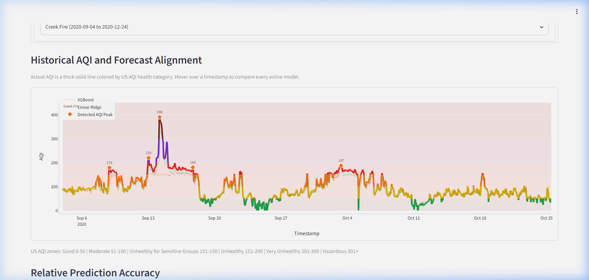
Creek Fire 2020 (Live Dashboard): Actual AQI spiked to 390 (Hazardous) — both XGBoost & Linear Ridge predicted only ~150–200. Models severely underestimate top 5% extreme wildfire peaks.
Prediction Diagnostics (Predicted vs Actual)
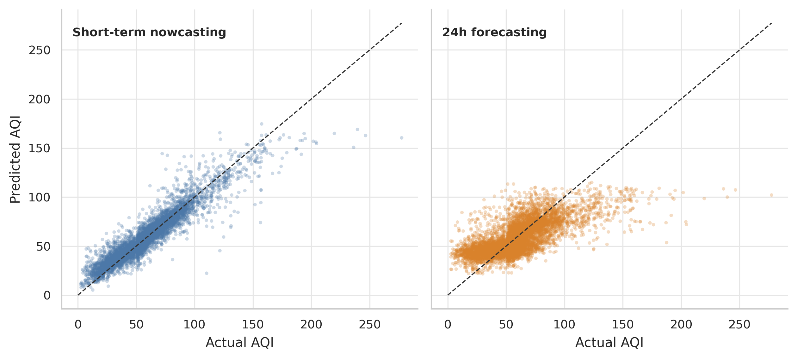
Visualizing LightGBM predictions against actual AQI. Insight: The model successfully captures the general trend and central ranges but exhibits some variance at extreme high-end peaks.
Conclusion
- RQ1: Tabular ML models achieve robust accuracy ($R^2 = 0.8711$) under a strict leakage-safe protocol.
- RQ2: Short-term predictions rely on recent local history; 24h forecasting forces models to rely on climate-context (VPD) — Persistence collapses ($R^2 = 0.23$).
- RQ3: Models face stability issues during top 5% extreme events; VPD & spatial lags provide vital physical context but modest global metric gains.
AI Audit Log & Human Delta
2 Excel Audit Logs provided (Tracking > 20 prompts by Minh & Sang).
- Logic Error (Entry #008): AI confidently suggested using current PM2.5/PM10 proxy columns as features. $\rightarrow$ Rejected: Target Leakage risk. Fixed by building a strict leakage audit script.
- Stale Artifact Risk (Entry #014): AI claimed all generated notebook figures and metrics were perfect and ready to use. $\rightarrow$ Rejected: Manual check found missing plots and stale numbers. Fixed manually.
- Oversimplification (Entry #016): AI claimed VPD strongly improves accuracy. $\rightarrow$ Rejected: Ablation study showed removing VPD changed $R^2$ by <0.001. Fixed by rewording VPD as a "dryness context feature."
Limitations & Future Directions
Current Limitations
- Satellite Data Absence: Pure tabular models lack spatial awareness of smoke plume trajectories.
- 24h Forecasting Decay: Model accuracy drops significantly for 24-hour horizons compared to 1-3h nowcasting.
- Extreme Peak Underestimation: XGBoost struggles to predict the absolute top 5% of hazardous spikes.
Future Directions
- Aerosol Optical Depth (AOD): Integrate NASA/NOAA satellite AOD data to capture smoke movement.
- Deep Learning Architecture: Implement Spatio-Temporal Graph Neural Networks (ST-GNN) to replace tabular ML.
- IoT Alert System: Enhance the live dashboard to push automated SMS/Email alerts for Air Stagnation events.
Jupyter Notebooks & SQL Data are ready for review.
🚀 Live Demo: starlink.tail334064.ts.net